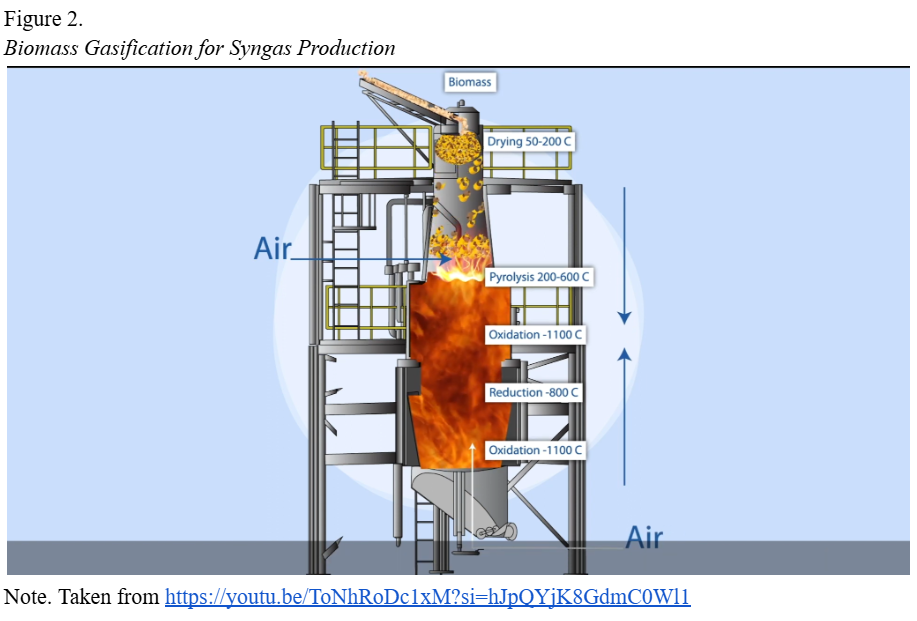

Application of Science
Biomass gasification is a thermochemical conversion process during which biomass can be used to produce syngas (Samiran et al., 2016). The process can be divided into 4 steps: Drying, pyrolysis, oxidation (combustion), and reduction.
‣ Drying
The step involves the removal of moisture from the biomass. This step is crucial, because it ensures that less energy will be wasted on evaporating the water, allowing the process to be more energy-efficient. The optimal moisture content for the biomass ranges between 10-15% (“Wood Gasification: Progressive Technology”, n.d.). It can be achieved through different methods depending on the type of biomass and its scale. Some of the methods include:
- Open-Air Drying, which includes drying materials (usually husks and stalks). The method is slow and depends on the weather conditions, with the final moisture content usually varying from 15% to 35%.
- Direct-Fired Rotary Dryers, which are the most commonly used type of drying for many materials, such as bark, sawdust, and hog fuel, due to their availability and low costs. The temperature inside those dryers vary from 500°F to 800°F.
- Conveyor Dryers work by spreading the waste onto a perforated conveyor to dry the material. Fans blow through the conveyor and biomass, either upward or downward, drying the waste. They can be used for a variety of materials, however, have a larger footprint than the direct-fired rotary dryers. The dryers operate at temperatures between 200°F to 400°F (Roos, 2013).
‣ Pyrolysis
Pyrolysis is a chemical decomposition process that occurs in the absence of oxygen. The temperatures during pyrolysis ranges between 300°C and 800°C (Digman et al., 2009). As a result of pyrolysis, the biomass breaks into char, condensable liquids (tar), and volatile gases (including H₂, CO, CO₂, CH₄, and various hydrocarbons). This step is important, as it determines the final composition of the product. For example, the product yields obtained by biomass conversion at a moderate temperature (600–800 °C), and short residence time is usually 75% Liquid, 12% Char, and 13% Gas. Meanwhile, biomass that has undergone pyrolysis at a low temperature (300–500 °C) and very long residence time usually is 30% Liquid, 35% Char, and 35% Gas (Glushkov et al., 2021). Moreover, during flash pyrolysis, biomass, such as cellulose, hemicellulose, and lignin, breaks into smaller molecules, some of which are vapors. As those vapours cool down, they condense into a liquid called bio-oil, which is corrosive and presents handling problems (Reed, 1980).
‣ Oxidation (combustion)
During this step, a partial combustion of char and some volatile components occurs with a controlled supply of an oxidant, such as air, oxygen, or steam. It is an exothermic reaction that takes place at a temperature of 800–1400°C. As a result of oxidation, the heat needed for the gasification reaction is produced. Main reactions that happen during the step are (Gao et al., 2023):
- C (s) + O₂ (g) → CO₂ (g) + 393.5 kJ/mol
- 2 C (s) + O₂ (g) → 2 CO + 221 kJ/mol
- 2 H₂ + O → 2 H₂O + 242 kJ/mol
Therefore, as a result of the oxidation stage, char partially burns, and heat is released for the next stage.
‣ Reduction
The stage occurs at a temperature of 800-1100°C (Samiran et al., 2016). During it, the components of syngas are produced. The main reactions that take place are:
- Boudouard reaction: C + CO₂ → 2CO
- Water-gas reaction: C + H₂O → CO + H₂
- Methanation: C + 2H₂ → CH₄
- Steam reforming of methane: CH₄ + H₂O → CO + 3H₂
The products can be used for electricity production or creation of synthetic fuels, acting as a renewable energy source.
